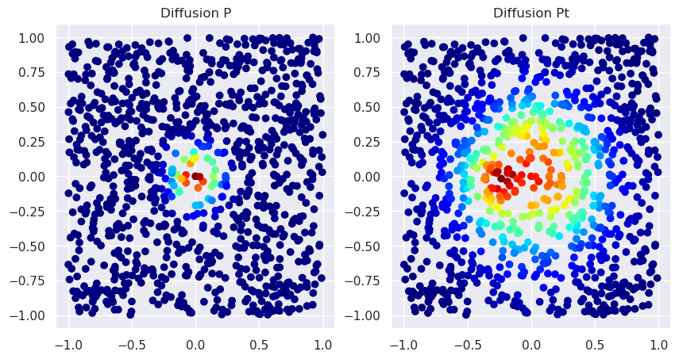
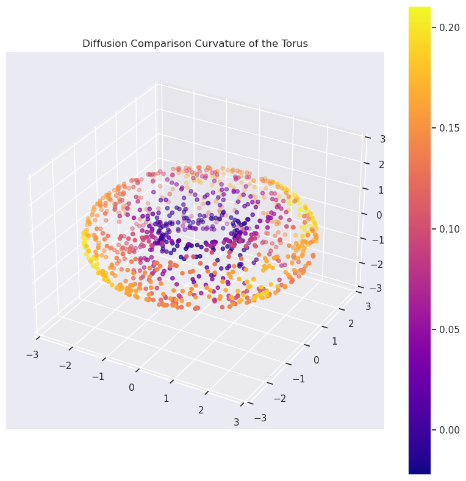

from diffusion_curvature.datasets import torusImplementation (PyGSP + JAX)
Curvature computations on any graphtools graph
This notebook implements diffusion curvature atop the popular PyGSP library. To compute the curvature of any PyGSP graph, simply instantiate a DiffusionCurvature object with your choice of parameters, and pass the graphtools graph through as input.
What follows is a literate implementation, showing the steps of the algorithm applied to our old friend, the torus.
The implementation of Diffusion Curvature involves several big pieces, each of which can be performed with different strategies:
- Simulating heat diffusion on the manifold, either via powering the diffusion matrix, or by Chebyshev approximation of the heat equation using the graph laplacian.
- Computing the “spreads” of diffusion. This can be done either via the entropy or the Wasserstein distance.
- Constructing a comparison space of approximately the same sampling as the input graph.
- (Experimental) Verification that the above is working by differentiating the spreads of diffusion over time.
We implement everything generically in JAX (a high performance numpy replacement, which can compile to the GPU), treating each of the above as modules that can be parametrically tuned. Functional programming is our game: each function takes a graph object as input and returns an updated graph object with the required quantities computed.
# Our sample dataset for testing the rest of the notebook
X_torus, ks_torus = torus(5000,use_guide_points=True)Graph Construction
Our ‘Graphs’ notebook has code to create PyGSP graphs from pointcloud data, in several varieties. We also provide heuristics to sanity check the graphs, as well as choose the optimal parameters. TODO: MAKE THESE HEURISTICS
from diffusion_curvature.graphs import get_alpha_decay_graph, get_knn_graph, get_scanpy_graphG_torus = get_alpha_decay_graph(X_torus,knn=15,decay=20,anisotropy=1.0)The Diffusion Curvature Class
fill_diagonal
fill_diagonal (a, val)
DiffusionCurvature
DiffusionCurvature (diffusion_type:Literal['diffusionmatrix','heatkernel ']='diffusion matrix', laziness_method:Literal['Wasse rstein','Entropic','Laziness']='Entropic', flattening _method:Literal['Neural','Fixed','MeanFixed']='Fixed' , comparison_method:Literal['Ollivier','Subtraction'] ='Subtraction', graph_former=<function get_adaptive_graph>, dimest=None, points_per_cluster=None, comparison_space_size_factor=1, use_grid=False, max_flattening_epochs=50, aperture=20, smoothing=1, c omparison_space_file='../data/entropies_averaged.h5', verbose=False)
Initialize self. See help(type(self)) for accurate signature.
| Type | Default | Details | |
|---|---|---|---|
| diffusion_type | Literal | diffusion matrix | Either [‘diffusion matrix’,‘heat kernel’] |
| laziness_method | Literal | Entropic | Either [‘Wasserstein’,‘Entropic’, ‘Laziness’] |
| flattening_method | Literal | Fixed | Either [‘Neural’, ‘Fixed’, ‘Mean Fixed’] |
| comparison_method | Literal | Subtraction | Either [‘Ollivier’, ‘Subtraction’] |
| graph_former | function | get_adaptive_graph | |
| dimest | NoneType | None | Dimension estimator to use. If none, defaults to kNN. |
| points_per_cluster | NoneType | None | Number of points to use in each cluster when constructing comparison spaces. Each comparison space takes about 20sec to construct, and has different sampling and dimension. If 1, constructs a different comparison space for each point; if None, constructs just one comparison space. |
| comparison_space_size_factor | int | 1 | Number of points in comparison space is the number of points in the original space divided by this factor. |
| use_grid | bool | False | If True, uses a grid of points as the comparison space. If False, uses a random sample of points. |
| max_flattening_epochs | int | 50 | |
| aperture | int | 20 | if using Laziness flattening, this controls the size of neighborhood over which the return probability is averaged. |
| smoothing | int | 1 | |
| comparison_space_file | str | ../data/entropies_averaged.h5 | |
| verbose | bool | False |
get_adaptive_graph
get_adaptive_graph (X, k=10, alpha=0)
SimpleGraph
SimpleGraph (W:numpy.ndarray)
graphtools_graph_from_data
graphtools_graph_from_data (X)
Verification
With Approximated Heat Diffusion
X_torus,ks = torus(1000,use_guide_points=True)
G_torus = get_adaptive_graph(X_torus)2024-01-04 08:58:24,896:[WARNING](pygsp.graphs.graph.check_weights): The main diagonal of the weight matrix is not 0!G_torus.W.shape(1000, 1000)DC = DiffusionCurvature(
diffusion_type = "heat kernel",
laziness_method="Entropic",
flattening_method="Fixed",
comparison_method="Subtraction",
points_per_cluster=None, # construct separate comparison spaces around each point
comparison_space_size_factor=1,
use_grid=False,
)Rn = np.random.rand(400,2)
Grn = DC.graph_former(Rn)2024-01-04 08:59:12,340:[WARNING](pygsp.graphs.graph.check_weights): The main diagonal of the weight matrix is not 0!Grn.W.shape(400, 400)ks_torus = DC.curvature(G_torus, t=None, dim=2, knn=15)2024-01-04 08:59:31,999:[WARNING](pygsp.graphs.graph.check_weights): The main diagonal of the weight matrix is not 0!
IOPub data rate exceeded.
The Jupyter server will temporarily stop sending output
to the client in order to avoid crashing it.
To change this limit, set the config variable
`--ServerApp.iopub_data_rate_limit`.
Current values:
ServerApp.iopub_data_rate_limit=1000000.0 (bytes/sec)
ServerApp.rate_limit_window=3.0 (secs)
(1000,)ValueError: axis -1 is out of bounds for array of dimension 0plot_3d(X_torus,ks_torus,colorbar=True,title='Diffusion Comparison Curvature of the Torus')plt.scatter(ks, ks_torus)
plt.title("Diffusion Curvature vs Real Curvature of Torus")
plt.xlabel("Gaussian Curvature")
plt.ylabel("Diffusion Curvature")ValueError: x and y must be the same size
X_sphere, ks_sphere = sphere(1000,use_guide_points=True)
G_sphere = get_adaptive_graph(X_sphere)
DC = DiffusionCurvature(
laziness_method="Entropic",
flattening_method="Fixed",
comparison_method="Subtraction",
graph_former = get_adaptive_graph,
)
sphere_entropy = DC.unsigned_curvature(G_sphere, t=25)[0]
print("Sphere entropies are ", sphere_entropy)
DC.curvature(G_sphere,t=25,dim=2)Sphere entropies are 6.655565Array([0.11335707, 0.06487274, 0.05884409, 0.05740404, 0.0642314 ,
0.06366301, 0.05483818, 0.06147385, 0.08759928, 0.05728197,
0.06411648, 0.08686781, 0.05503988, 0.09050846, 0.08116913,
0.03181219, 0.12897491, 0.08714104, 0.06678724, 0.05969143,
0.07953739, 0.07100677, 0.06172848, 0.08681393, 0.07116699,
0.09487152, 0.08594608, 0.06987953, 0.08752728, 0.08381319,
0.10403967, 0.09759521, 0.08669853, 0.07118797, 0.05764246,
0.09759665, 0.10303497, 0.0868988 , 0.10510015, 0.06851149,
0.09032917, 0.07850552, 0.04110861, 0.05405045, 0.05058098,
0.06604719, 0.10579872, 0.0817647 , 0.07427454, 0.06593466,
0.08328724, 0.07362413, 0.09141922, 0.10187674, 0.05985785,
0.09553814, 0.06983089, 0.04920149, 0.07766151, 0.09164715,
0.07969284, 0.04097891, 0.0702467 , 0.06564188, 0.08948517,
0.0845356 , 0.09049368, 0.10028028, 0.0979805 , 0.0927496 ,
0.08528709, 0.08123779, 0.08337545, 0.06309032, 0.08763933,
0.09051132, 0.05973339, 0.09566021, 0.06791067, 0.06535816,
0.06742287, 0.05220127, 0.08181667, 0.07960033, 0.08837652,
0.03656912, 0.09111023, 0.10952806, 0.05620575, 0.09327269,
0.12839031, 0.13030815, 0.09196281, 0.07912397, 0.06233597,
0.07339478, 0.11855936, 0.07903099, 0.09766197, 0.05419445,
0.08125305, 0.06524277, 0.05321598, 0.08076906, 0.08762741,
0.06943989, 0.13047361, 0.04755688, 0.08558178, 0.07583284,
0.07408619, 0.07964134, 0.07853556, 0.08562994, 0.08383465,
0.07005501, 0.08957243, 0.08760738, 0.10600567, 0.07975292,
0.07248878, 0.08154964, 0.08699846, 0.11436415, 0.07627773,
0.06837606, 0.07192278, 0.06020164, 0.10035324, 0.05051041,
0.08448887, 0.11090851, 0.07821178, 0.09141922, 0.08282757,
0.05962753, 0.08533669, 0.09196186, 0.06243706, 0.07434845,
0.06517315, 0.12801504, 0.07238007, 0.08558321, 0.08384991,
0.11973953, 0.05550003, 0.06878376, 0.07501745, 0.07222176,
0.06437016, 0.07418203, 0.08648586, 0.07268524, 0.09285355,
0.1021452 , 0.09206486, 0.05852842, 0.11701012, 0.09866571,
0.06476784, 0.05934143, 0.06882191, 0.10729408, 0.08915997,
0.07189846, 0.06034374, 0.08197355, 0.09082222, 0.07134485,
0.09181786, 0.07562733, 0.08058929, 0.08986425, 0.10321665,
0.08199501, 0.11547995, 0.08556461, 0.06375408, 0.09595585,
0.07134056, 0.05936003, 0.10069847, 0.0920248 , 0.0682478 ,
0.08965921, 0.10433626, 0.07322884, 0.09017277, 0.07954979,
0.06465578, 0.08976555, 0.08947659, 0.10598612, 0.07743883,
0.07683754, 0.06537199, 0.09267139, 0.09297276, 0.05983925,
0.08270025, 0.08384848, 0.0358305 , 0.07146597, 0.05775452,
0.06509686, 0.08713055, 0.11515236, 0.06367111, 0.05358601,
0.07762241, 0.06050825, 0.1136961 , 0.06980181, 0.12893963,
0.08900356, 0.06705284, 0.09195375, 0.09817123, 0.05263329,
0.09058428, 0.06303692, 0.05026817, 0.08079863, 0.06897879,
0.07525492, 0.08952808, 0.06900883, 0.0867424 , 0.08868504,
0.10039949, 0.06827116, 0.05599594, 0.09328413, 0.06389952,
0.09408426, 0.08490419, 0.0847168 , 0.10274601, 0.09403706,
0.10481405, 0.07272911, 0.07094669, 0.07708597, 0.11218977,
0.07840681, 0.12765694, 0.07936001, 0.06864929, 0.08695459,
0.05975056, 0.12005091, 0.11665201, 0.08816004, 0.07531261,
0.07729721, 0.11365318, 0.13855743, 0.07913589, 0.0781889 ,
0.10389757, 0.12170601, 0.08514786, 0.075634 , 0.121315 ,
0.06645107, 0.07601118, 0.060853 , 0.07239103, 0.08244514,
0.10001373, 0.06660032, 0.06484604, 0.08138657, 0.09447384,
0.06897068, 0.06223488, 0.09180164, 0.09990549, 0.06732178,
0.09585047, 0.08702803, 0.06343746, 0.08570433, 0.09392262,
0.10494709, 0.07350254, 0.05890846, 0.09878397, 0.07083607,
0.07613325, 0.07218266, 0.08658457, 0.06997585, 0.09469509,
0.06267452, 0.12497616, 0.08941078, 0.06324816, 0.0883131 ,
0.10312557, 0.05045891, 0.05594158, 0.0553751 , 0.03766966,
0.07313347, 0.07922935, 0.06505299, 0.06317997, 0.06878376,
0.07766485, 0.09556961, 0.06594181, 0.07470226, 0.04703426,
0.06539726, 0.06102371, 0.08212614, 0.064394 , 0.07518148,
0.08916044, 0.07245684, 0.10277367, 0.06812429, 0.11281776,
0.05020905, 0.12582445, 0.0698595 , 0.07491112, 0.11322117,
0.08710861, 0.10459757, 0.07035112, 0.09850311, 0.08914948,
0.05855513, 0.07848549, 0.07558823, 0.09352541, 0.09365845,
0.10718155, 0.0929184 , 0.07888508, 0.05945444, 0.06639957,
0.06795168, 0.07767439, 0.08326626, 0.06954002, 0.12832832,
0.05132866, 0.05683613, 0.08876944, 0.08475208, 0.06815004,
0.06830788, 0.06574154, 0.0684433 , 0.09315252, 0.06450844,
0.08112144, 0.07032013, 0.07417583, 0.0657177 , 0.06024456,
0.07568312, 0.06376934, 0.07691145, 0.09345627, 0.05396366,
0.07360935, 0.06457043, 0.08803082, 0.12340546, 0.0430851 ,
0.07584906, 0.0856905 , 0.0761919 , 0.0712986 , 0.05959988,
0.09634113, 0.0748415 , 0.0676074 , 0.06634808, 0.10871696,
0.08019495, 0.07570696, 0.10012627, 0.09920406, 0.10649729,
0.06039715, 0.08942413, 0.06424427, 0.06639147, 0.0746727 ,
0.09383821, 0.07926512, 0.0873909 , 0.08634281, 0.08192921,
0.09456968, 0.11109734, 0.07531071, 0.04559326, 0.08145332,
0.06811523, 0.09026051, 0.11224699, 0.06617832, 0.09417629,
0.06792831, 0.08418083, 0.08686972, 0.12643385, 0.07878637,
0.11114264, 0.04911709, 0.1169157 , 0.09134436, 0.08148003,
0.09504318, 0.06370163, 0.08488941, 0.05987835, 0.13197803,
0.05270767, 0.07995224, 0.10610676, 0.09008026, 0.06410074,
0.06399536, 0.09253311, 0.08636713, 0.08924484, 0.12523079,
0.06997776, 0.05615473, 0.07116127, 0.10870552, 0.07948971,
0.08502913, 0.08753777, 0.10682964, 0.06801271, 0.08881092,
0.0724144 , 0.07473373, 0.05977488, 0.0730381 , 0.08695221,
0.08825588, 0.06974459, 0.0753336 , 0.09509182, 0.06197834,
0.12962246, 0.11076736, 0.066998 , 0.08677197, 0.07073832,
0.06846046, 0.05604649, 0.06168699, 0.09479332, 0.08106232,
0.04374695, 0.0801959 , 0.050807 , 0.04700708, 0.09164667,
0.10939503, 0.07735872, 0.02810955, 0.07032681, 0.07296419,
0.07951736, 0.1094861 , 0.04912567, 0.05851364, 0.06599331,
0.08242798, 0.07835865, 0.09446859, 0.06521273, 0.04284096,
0.06164026, 0.05933475, 0.08355713, 0.10876608, 0.08352518,
0.05979013, 0.09145069, 0.06964779, 0.06091166, 0.06638336,
0.05623055, 0.0547452 , 0.06066704, 0.06565952, 0.08337498,
0.08589268, 0.04935074, 0.05903912, 0.09692955, 0.11697578,
0.07919025, 0.05324936, 0.07700825, 0.08991051, 0.05273294,
0.06016684, 0.10387182, 0.06958485, 0.07950401, 0.06951571,
0.10289955, 0.12402725, 0.09953022, 0.09806585, 0.1200881 ,
0.06803513, 0.08253002, 0.08372974, 0.09606314, 0.1183157 ,
0.08200359, 0.09499502, 0.12273884, 0.07668495, 0.08426666,
0.07928753, 0.12814236, 0.09317827, 0.09383011, 0.08512974,
0.06221008, 0.07291174, 0.06158972, 0.05036497, 0.08027458,
0.10799599, 0.06039429, 0.0906496 , 0.12017775, 0.06580544,
0.08006144, 0.08427143, 0.0949769 , 0.08249712, 0.06364822,
0.07249451, 0.09234619, 0.07545185, 0.06292343, 0.09534073,
0.0941124 , 0.06604958, 0.08753014, 0.08483124, 0.03575754,
0.09688711, 0.08427143, 0.0531044 , 0.07679749, 0.10072041,
0.09100342, 0.07741117, 0.11707878, 0.07924509, 0.06065083,
0.06410646, 0.09311676, 0.08045197, 0.09255266, 0.07558632,
0.07061768, 0.09624672, 0.06072521, 0.04834604, 0.09179211,
0.08602047, 0.06194878, 0.1180191 , 0.08250809, 0.11218929,
0.06011295, 0.06771755, 0.08819771, 0.08334637, 0.13812065,
0.06575394, 0.08996582, 0.07463837, 0.13619947, 0.09487867,
0.07237339, 0.08357668, 0.05293703, 0.1101675 , 0.09483624,
0.06139851, 0.08657265, 0.06527901, 0.07776165, 0.08658028,
0.06300592, 0.12784863, 0.07217884, 0.08898067, 0.05928946,
0.07586384, 0.10997868, 0.07899761, 0.06864738, 0.07841492,
0.09145689, 0.08152771, 0.06027985, 0.05680513, 0.10590649,
0.05463219, 0.10816479, 0.0886116 , 0.08026123, 0.11724281,
0.09658051, 0.09207439, 0.08112001, 0.08570385, 0.11746883,
0.0910573 , 0.07527733, 0.07693291, 0.06337786, 0.0533123 ,
0.09091806, 0.12636948, 0.05478144, 0.06138515, 0.04859352,
0.06402016, 0.09357166, 0.0969696 , 0.10683918, 0.06055164,
0.07052898, 0.09449577, 0.09978724, 0.07355452, 0.05896282,
0.08079243, 0.07213211, 0.07021332, 0.08699036, 0.07072878,
0.11976337, 0.09253693, 0.06851482, 0.05401516, 0.06438017,
0.08043289, 0.07372904, 0.07995892, 0.08799839, 0.05041265,
0.044137 , 0.09023476, 0.07026005, 0.07932806, 0.05887413,
0.06160069, 0.1092639 , 0.06742859, 0.08018112, 0.07509518,
0.08341551, 0.11725616, 0.06489086, 0.07964468, 0.0903883 ,
0.13405895, 0.09177256, 0.07189655, 0.09475994, 0.06470966,
0.07616138, 0.07341385, 0.08142757, 0.05130863, 0.1085434 ,
0.09552002, 0.08458424, 0.06920767, 0.09314871, 0.07234097,
0.09067297, 0.06603003, 0.06534672, 0.09344578, 0.09195995,
0.06970596, 0.09057093, 0.0634346 , 0.07300091, 0.0798645 ,
0.05143881, 0.07696915, 0.09007931, 0.08588409, 0.08695078,
0.072824 , 0.08639145, 0.09895086, 0.07088995, 0.06571484,
0.12388325, 0.08738899, 0.09012747, 0.07936764, 0.08060551,
0.07700014, 0.09607792, 0.06435394, 0.07954502, 0.0631609 ,
0.08287907, 0.1208849 , 0.06450367, 0.10001469, 0.12327623,
0.05649948, 0.06689167, 0.09239864, 0.05399513, 0.07621002,
0.08848524, 0.07452536, 0.0740881 , 0.05610752, 0.05921936,
0.06929207, 0.09212494, 0.05885172, 0.08980083, 0.08908844,
0.06027317, 0.09336185, 0.07325745, 0.04906607, 0.07571459,
0.05941582, 0.06444168, 0.05993938, 0.07133055, 0.07237768,
0.08626509, 0.09695721, 0.08766174, 0.07289362, 0.05293512,
0.04969406, 0.05608368, 0.09086418, 0.10088253, 0.0633564 ,
0.09067631, 0.08647251, 0.08081388, 0.05587864, 0.08291006,
0.08054352, 0.11178827, 0.10813284, 0.07212782, 0.10191488,
0.07481098, 0.08961678, 0.07601929, 0.07112312, 0.0625639 ,
0.09436321, 0.05116749, 0.09538364, 0.09458685, 0.08861494,
0.07372522, 0.06473398, 0.10284948, 0.07118034, 0.05463266,
0.05225754, 0.05532551, 0.06560755, 0.05490637, 0.12158346,
0.09354687, 0.0847435 , 0.130579 , 0.07846737, 0.06517935,
0.08480835, 0.06446791, 0.08926773, 0.07934189, 0.07303619,
0.0624814 , 0.07749367, 0.08417702, 0.08885288, 0.06671333,
0.0852232 , 0.05438328, 0.06187677, 0.09126759, 0.06946278,
0.03325844, 0.07932758, 0.08590794, 0.06253338, 0.0816927 ,
0.09391689, 0.1122179 , 0.08875847, 0.07191372, 0.09672832,
0.0823431 , 0.05952024, 0.051054 , 0.10187626, 0.06600952,
0.08030128, 0.13138914, 0.09526825, 0.06717682, 0.04946089,
0.08749104, 0.13514328, 0.06309128, 0.05427265, 0.08188057,
0.10002708, 0.09151554, 0.08147621, 0.09595966, 0.0814786 ,
0.08463001, 0.09094143, 0.076087 , 0.06060266, 0.08299351,
0.09974241, 0.08121109, 0.07871056, 0.03160238, 0.04907417,
0.08376646, 0.06574059, 0.09810638, 0.06866074, 0.0599823 ,
0.0912447 , 0.07961941, 0.0949831 , 0.08458138, 0.110888 ,
0.0887146 , 0.05327415, 0.08838749, 0.06019258, 0.06787682,
0.07150173, 0.06150913, 0.08768463, 0.09446049, 0.07628107,
0.0777607 , 0.09572411, 0.11461926, 0.06961966, 0.04371357,
0.10290718, 0.07389641, 0.11757326, 0.08449745, 0.09725189,
0.06266117, 0.09806252, 0.0629673 , 0.10153055, 0.08573723,
0.07448578, 0.0763731 , 0.07483196, 0.07042503, 0.08677483,
0.08396435, 0.11277103, 0.09647322, 0.06644011, 0.12908268,
0.06702042, 0.09411621, 0.06900978, 0.08332348, 0.07097864,
0.10585499, 0.05586147, 0.07631302, 0.05942869, 0.06037331,
0.0894084 , 0.08821344, 0.11110973, 0.04807377, 0.08792496,
0.0760746 , 0.06967068, 0.08922672, 0.028965 , 0.08651161,
0.08542585, 0.09427595, 0.08531189, 0.10176229, 0.09003162,
0.12104511, 0.07161331, 0.07312965, 0.10148144, 0.08242655,
0.0694809 , 0.06045151, 0.06627083, 0.09000969, 0.09677505,
0.08189869, 0.1018281 , 0.06925154, 0.09970713, 0.11207676,
0.06885433, 0.05326128, 0.06263638, 0.07164431, 0.07298803,
0.07818079, 0.11038685, 0.08878708, 0.07209206, 0.06343794,
0.10221481, 0.06774139, 0.08673811, 0.03009081, 0.05997753,
0.06807661, 0.08285809, 0.03423882, 0.08674049, 0.09929848,
0.04765987, 0.07797718, 0.06278992, 0.11527443, 0.08953571,
0.09015942, 0.08607244, 0.08385897, 0.07640123, 0.06941175,
0.0920949 , 0.0824852 , 0.08013582, 0.10355186, 0.08541107,
0.10334301, 0.06365776, 0.07396507, 0.08944321, 0.06364107,
0.06188726, 0.05822945, 0.09568787, 0.13042402, 0.07145357,
0.08201027, 0.10353804, 0.09361458, 0.08052015, 0.09439564,
0.07261038, 0.08382034, 0.08790207, 0.05024719, 0.06147575,
0.11889267, 0.08236313, 0.0749197 , 0.07372189, 0.09831762], dtype=float32)X_plane = plane(len(X_sphere))
G_plane = get_adaptive_graph(X_plane)
plane_entropy = DC.unsigned_curvature(G_plane, t=25)[0]
print("Plane entropy is ", plane_entropy)Plane entropy is 6.802491On the Plane
X_plane = plane(1000)
G_plane = get_adaptive_graph(X_plane) #get_alpha_decay_graph(X_plane, decay=None, knn=15, anisotropy=1, )
P = diffusion_matrix_from_affinities(G_plane.W) #diff_op(G_plane).todense() # is sparse, by default
P = jnp.array(P)
Pt = jax_power_matrix(P,8)fig, axs = plt.subplots(1, 2, figsize=(10, 5))
# plot the first scatter plot
axs[0].scatter(X_plane[:,0],X_plane[:,1],c=P[0].tolist(), cmap='jet')
axs[0].set_title('Diffusion P')
# plot the second scatter plot
axs[1].scatter(X_plane[:,0],X_plane[:,1],c=Pt[0].tolist(), cmap='jet')
axs[1].set_title('Diffusion Pt')
plt.show()
DC = DiffusionCurvature(laziness_method="Entropic",points_per_cluster=None,comparison_space_size_factor=1,comparison_method="Subtraction", flattening_method="Fixed")
ks_plane= DC.curvature(G_plane, t=8, dim=2, knn=15)Let’s check that higher dimensional planes are also given flat curvature
ds = [3,4,5,6]
planes = [plane(1000*2**(d-2), d) for d in ds]
for i, d in enumerate(ds):
G = get_adaptive_graph(planes[i]) #get_alpha_decay_graph(planes[i], decay=None, knn=15, anisotropy=1, )
DC = DiffusionCurvature(laziness_method="Entropic",points_per_cluster=500,comparison_space_size_factor=1,comparison_method="Subtraction", flattening_method="Fixed")
ks = DC.curvature(G, t=8, dim=d, knn=15)
print("dimension",d,": Curvature of Plane is ",ks[0])dimension 3 : Curvature of Plane is 0.0050811768
dimension 4 : Curvature of Plane is -0.0046873093
dimension 5 : Curvature of Plane is -0.0007057192024-01-03 19:46:52.845911: W external/tsl/tsl/framework/bfc_allocator.cc:485] Allocator (GPU_0_bfc) ran out of memory trying to allocate 976.68MiB (rounded to 1024128256)requested by op
2024-01-03 19:46:52.846067: W external/tsl/tsl/framework/bfc_allocator.cc:497] ************************************************xx_____*************______________________________**
2024-01-03 19:46:52.846137: E external/xla/xla/pjrt/pjrt_stream_executor_client.cc:2716] Execution of replica 0 failed: RESOURCE_EXHAUSTED: Out of memory while trying to allocate 1024128004 bytes.
BufferAssignment OOM Debugging.
BufferAssignment stats:
parameter allocation: 1.91GiB
constant allocation: 0B
maybe_live_out allocation: 976.68MiB
preallocated temp allocation: 0B
total allocation: 2.86GiB
total fragmentation: 0B (0.00%)
Peak buffers:
Buffer 1:
Size: 976.68MiB
Entry Parameter Subshape: f32[16001,16001]
==========================
Buffer 2:
Size: 976.68MiB
Entry Parameter Subshape: f32[16001,16001]
==========================
Buffer 3:
Size: 976.68MiB
Operator: op_name="jit(fn)/jit(main)/add" source_file="/home/piriac/Pumberton/Workshop/21-SUMRY-Curvature/diffusion_curvature/diffusion_curvature/graphs.py" source_line=131
XLA Label: fusion
Shape: f32[16001,16001]
==========================
XlaRuntimeError: RESOURCE_EXHAUSTED: Out of memory while trying to allocate 1024128004 bytes.
BufferAssignment OOM Debugging.
BufferAssignment stats:
parameter allocation: 1.91GiB
constant allocation: 0B
maybe_live_out allocation: 976.68MiB
preallocated temp allocation: 0B
total allocation: 2.86GiB
total fragmentation: 0B (0.00%)
Peak buffers:
Buffer 1:
Size: 976.68MiB
Entry Parameter Subshape: f32[16001,16001]
==========================
Buffer 2:
Size: 976.68MiB
Entry Parameter Subshape: f32[16001,16001]
==========================
Buffer 3:
Size: 976.68MiB
Operator: op_name="jit(fn)/jit(main)/add" source_file="/home/piriac/Pumberton/Workshop/21-SUMRY-Curvature/diffusion_curvature/diffusion_curvature/graphs.py" source_line=131
XLA Label: fusion
Shape: f32[16001,16001]
==========================
ds = [3,4,5,6]
planes = [plane(1000*2**(d-2), d) for d in ds]
for i, d in enumerate(ds):
G = get_adaptive_graph(planes[i]) #get_alpha_decay_graph(planes[i], decay=None, knn=15, anisotropy=1, )
DC = DiffusionCurvature(laziness_method="Entropic",points_per_cluster=None,comparison_space_size_factor=1,comparison_method="Subtraction", flattening_method="Fixed")
ks = DC.curvature(G, t=8, dim=d, knn=15)
print("dimension",d,": Curvature of Plane is ",ks[0])How bout a donut?
With Fixed Flattening
X_torus,ks = torus(5000,use_guide_points=False)
G_torus = get_adaptive_graph(X_torus) #graphtools.Graph(X_torus, anisotropy=1, knn=15, decay=None).to_pygsp()
P = diffusion_matrix_from_affinities(G_torus.W) # is sparse, by default
P = jnp.array(P)
Pt = jax_power_matrix(P,30)DC = DiffusionCurvature(
laziness_method="Entropic",
flattening_method="Fixed",
comparison_method="Subtraction",
points_per_cluster=None, # construct separate comparison spaces around each point
comparison_space_size_factor=1
)
ks_torus = DC.curvature(G_torus, t=30, dim=2, knn=15)plot_3d(X_torus,ks_torus,colorbar=True,title='Diffusion Comparison Curvature of the Torus')plt.scatter(ks, ks_torus)
plt.title("Diffusion Curvature vs Real Curvature of Torus")
plt.xlabel("Gaussian Curvature")
plt.ylabel("Diffusion Curvature")With Grid
DC = DiffusionCurvature(
laziness_method="Entropic",
flattening_method="Fixed",
comparison_method="Subtraction",
points_per_cluster=None, # construct separate comparison spaces around each point
comparison_space_size_factor=1,
use_grid=True,
)
ks_torus = DC.curvature(G_torus, t=25, dim=2, knn=15)plot_3d(X_torus,ks_torus,colorbar=True,title='Diffusion Comparison Curvature of the Torus')plt.scatter(ks, ks_torus)
plt.title("Diffusion Curvature vs Real Curvature of Torus")
plt.xlabel("Gaussian Curvature")
plt.ylabel("Diffusion Curvature")With Wasserstein
DC = DiffusionCurvature(
laziness_method="Wasserstein",
flattening_method="Fixed",
comparison_method="Ollivier",
points_per_cluster=None, # construct separate comparison spaces around each point
comparison_space_size_factor=1,
)
ks_torus = DC.curvature(G_torus, t=15, dim=2, knn=15)plot_3d(X_torus,ks_torus,colorbar=True,title='Diffusion Wasserstein Curvature of the Torus')plt.scatter(ks, ks_torus)
plt.title("Diffusion Curvature vs Real Curvature of Torus")
plt.xlabel("Gaussian Curvature")
plt.ylabel("Diffusion Curvature")plot_3d(X_torus,ks_torus,colorbar=True,title='Diffusion Comparison Curvature of the Torus')plt.scatter(ks, ks_torus)
plt.title("Diffusion Curvature vs Real Curvature of Torus")
plt.xlabel("Gaussian Curvature")
plt.ylabel("Diffusion Curvature")With Laziness
DC = DiffusionCurvature(
laziness_method="Laziness",
flattening_method="Fixed",
comparison_method="Subtraction",
points_per_cluster=None, # construct separate comparison spaces around each point
comparison_space_size_factor=1,
aperture=30,
smoothing = 4,
)
ks_torus = DC.curvature(G_torus, t=30, dim=2, knn=15,)uks = DC.unsigned_curvature(G_torus,t=30)plot_3d(X_torus,DC.Pt[0])plot_3d(X_torus,uks)plot_3d(X_torus,ks_torus,colorbar=True,title='Diffusion Wasserstein Curvature of the Torus')plt.scatter(ks, ks_torus)
plt.title("Diffusion Curvature vs Real Curvature of Torus")
plt.xlabel("Gaussian Curvature")
plt.ylabel("Diffusion Curvature")With VNE t selection
DC = DiffusionCurvature(
laziness_method="Entropic",
flattening_method="Fixed",
comparison_method="Subtraction",
points_per_cluster=None, # construct separate comparison spaces around each point
comparison_space_size_factor=1,
use_grid=True,
)
ks_torus = DC.curvature(G_torus, t=None, dim=2, knn=15)<class 'scipy.sparse._csr.csr_matrix'>
(1000,)
<class 'scipy.sparse._csr.csr_matrix'>2024-01-03 20:44:48,884:[WARNING](pygsp.graphs.graph.check_weights): The main diagonal of the weight matrix is not 0!plot_3d(X_torus,ks_torus,colorbar=True,title='Diffusion Comparison Curvature of the Torus')
plt.scatter(ks, ks_torus)
plt.title("Diffusion Curvature vs Real Curvature of Torus")
plt.xlabel("Gaussian Curvature")
plt.ylabel("Diffusion Curvature")With Neural Flattening
DC = DiffusionCurvature(
laziness_method="Entropic",
flattening_method="Neural",
comparison_method="Subtraction",
points_per_cluster=100, # construct separate comparison spaces around each point
comparison_space_size_factor=10,
max_flattening_epochs=100,
use_grid=False,
)
ks_torus = DC.curvature(G_torus, t=25, dim=2, knn=15)plot_3d(X_torus,ks_torus,colorbar=True,title='Diffusion Comparison Curvature of the Torus')plt.scatter(ks, ks_torus)
plt.title("Diffusion Curvature vs Real Curvature of Torus")
plt.xlabel("Gaussian Curvature")
plt.ylabel("Diffusion Curvature")DC = DiffusionCurvature(
laziness_method="Entropic",
flattening_method="Fixed",
comparison_method="Subtraction",
points_per_cluster=None, # construct separate comparison spaces around each point
comparison_space_size_factor=1
)
ks_torus_at_idx = DC.curvature(G_torus, t=15, dim=2, knn=15, idx=12)ks_torus_at_idxuks = DC.unsigned_curvature(G_torus,t=15)uksplot_3d(X_torus,uks,colorbar=True)labels = enhanced_spectral_clustering(G_torus, uks, dim=2, num_clusters=9, )plot_3d(X_torus,labels)entropy_of_diffusion(Pt[0])fakePt = jnp.concatenate([Pt[0], jnp.zeros(len(Pt[0]))])
entropy_of_diffusion(jnp.concatenate([Pt[0], jnp.zeros(len(Pt[0]))]))jax.scipy.special.entr(jnp.concatenate([Pt[0], jnp.zeros(len(Pt[0]))]))# get num nonzero entries in fakePt
jnp.sum(fakePt>1e-10)(-jnp.log(1/jnp.sum(fakePt>1e-10, axis=-1)))jnp.sum(jax.scipy.special.entr(jnp.ones(10)/10))With Mean Flattening
DC = DiffusionCurvature(
laziness_method="Entropic",
flattening_method="Mean Fixed",
comparison_method="Subtraction",
points_per_cluster=None, # construct separate comparison spaces around each point
comparison_space_size_factor=1,
use_grid=False,
)
ks_torus = DC.curvature(G_torus, t=25, dim=2, knn=15)plot_3d(X_torus,ks_torus,colorbar=True,title='Diffusion Comparison Curvature of the Torus')plt.scatter(ks, ks_torus)
plt.title("Diffusion Curvature vs Real Curvature of Torus")
plt.xlabel("Gaussian Curvature")
plt.ylabel("Diffusion Curvature")!nbdev_export